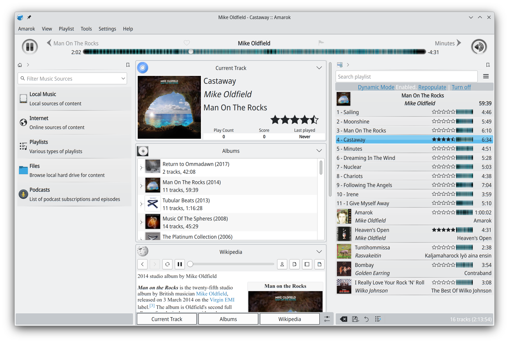

Amarok 深度盘点：二十年磨一剑的收藏管理型播放器
KDE 社区开发的老牌开源播放器，把散装文件变成有组织、有统计、有上下文的结构化音乐库。本文从五个能力域完整铺开它的能力面，客观指出局限，帮你判断是否值得花时间建立收藏。
开头：为什么要盘点 Amarok
播放器界有两条路：一条是点开一个文件就听，另一条是把几百上千首歌管成一个有生命的收藏。Amarok 走的是后者——KDE 社区从 2003 年磨到今天的这款开源软件，官网 给自己的定位就是「music player and collection manager」，收藏管理器才是它的灵魂。理解了这一点，它的界面为什么是三块分区、功能取舍为什么这么设计、为什么有人花一下午扫曲库评分打标签——都说得通了。
这篇盘点不按功能清单罗列，而是按它解决问题的能力域来梳理。从样本文档的分组结构里，五个核心能力域可以分别展开：收藏管理、播放列表三形态、上下文视图、安装灵活性、服务集成。每一块都对应着一类实际的使用场景。
能力域一：收藏管理——把散装文件变成结构化曲库
Amarok 的起点是「我能听什么」这个问题，但它给出的答案远比文件浏览器多。核心做法是扫描本地音乐文件夹，然后自动建立一套按艺人、专辑、流派、年份分层的浏览体系，再加上星级评分、播放次数统计、高级筛选这三件武器——把硬盘里散落的散装文件，变成一个有数据的收藏。
这套体系里有几个亮点。标签编辑器支持从 MusicBrainz 取数据，也能按文件名猜标签，批量操作时省去了逐首改的麻烦。封面管理器可以批量抓取缺失的专辑封面，对下载来的乱七八糟的合集尤其有用。转码工具内置在整理工具箱里，格式不对直接转，不用另找工具。三个功能配合起来，「电子仓鼠」们慢慢就能把几年攒的曲库捋得井井有条。
场景上，本地曲库规模在几百首以上的人最能感受到这套体系的价值——曲库越大，分层浏览、高级筛选、评分与播放次数这些统计数据越有用。反过来，曲库小的人花一下午扫完可能也觉得没必要。
能力域二：播放列表三形态——从手动到自动，永不播完
播放列表是 Amarok 的第二大脑。它不是单一的列表，而是三种形态并存：手动列表（拖歌、排序、右键操作）、动态播放列表（按概率驱动的规则自动往列表里补歌，边听边长）、自动生成器（按条件生成一次性列表）。三种玩法覆盖了从「今天想按专辑顺序听」到「想听点新鲜但又不想换风格」的全部需求。
动态播放列表是这里面最有意思的一块。biases（概率规则）机制让用户可以指定「偏向某几个艺人」「排除某几种流派」「尽量不重复最近听过的」，然后它自动往里补歌，永不播完。这在长期使用中积累下来的体验比任何固定列表都好——它会根据你的收听行为慢慢摸出偏好。
能力域三：上下文视图——围绕当前曲目的信息气泡
中间那块上下文视图是 Amarok 的招牌设计。它随着当前播放的曲目变化，自动展示这首歌的百科词条、歌词、相似艺人、专辑照片——这些信息以 applet（小部件）为单位组织，按需增删。没有播放时它也不闲着，展示收藏概况与最近播放。
这个设计的出发点很朴素：听歌的同时想不起来这首歌是谁唱的、想看看这位艺人还有什么专辑、想找找歌词——这些需求在其他播放器里要么跳到浏览器要么根本没有入口，Amarok 直接把它们嵌在了播放器界面里。对于喜欢一边听一边了解音乐背景的用户来说，这块区域的价值远大于播放列表本身。

能力域四：安装灵活性——三种路径各有适用场景
Amarok 在安装上给了用户很大的自由度。发行版仓库直接装是最省心的方式，绝大多数 Linux 发行版的软件仓库里都有，Flathub 上也有 Flatpak 版，不想用发行版仓库的也可以直接从Amarok下载拿现成包。源码编译是最灵活的路径——想在冷门架构上运行、想应用未合并的补丁、想追开发分支，都走这条路。
源码编译的完整流程是：从官方下载站拿 tarball、核对 GPG 签名（建议做，确认包没被篡改）、备齐 Qt6/KF6 与 GStreamer 依赖，然后 CMake 三段式构建。编译装好后的使用动线与二进制版一致。Windows 与 macOS 方面，当前版本可以自行编译但没有官方安装包，这一点是明确的短板。
能力域五：服务集成——从 Last.fm 到设备到脚本
Amarok 的集成能力体现在几个层面。Last.fm 听歌记录（scrobbling）深度集成，还能在收藏之间同步统计，配合评分与播放次数，多年积累下来的数据本身就成了个人音乐史。设备支持方面，基础的 iPod、MTP 与 UMS 音乐播放器都能识别。互联网服务补充了在线曲库、播客、电台（Magnatune、Ampache 等）。脚本支持可以扩展歌词来源、自定义网络服务。
这些集成的定位是「补充」而不是「替代」——它不做流媒体客户端，主流流媒体平台没有对应的接入功能。但对于以本地曲库为主、偶尔需要联网补充信息的用户来说，这套集成足够用了，想了解各服务的具体配置参数可以去Amarok文档查。
短板也要说：客观看局限
Amarok 的局限集中在几个方面。首先是平台覆盖的不足——Linux 是主阵地，Windows 与 macOS 只能自行编译，没有官方安装包，这在非 Linux 用户面前是硬门槛。其次，它不做流媒体客户端，定位是本地曲库管理，流媒体原生党直接绕行。界面复杂度也是一道门槛——三分格局加上各种面板设置、播放列表玩法、标签编辑工具，新手第一次打开会觉得信息量过载，需要一段时间适应。最后，项目虽然活跃，但版本节奏不算快，大版本迭代（比如 Amarok 4 的界面大改）间隔较长，追新的用户可能觉得等待漫长。
什么样的人该用它
本地曲库规模在几百首以上，愿意花时间建立收藏的重度听歌党。 他们的硬盘里攒了几年甚至十几年的音乐，文件夹结构已经理不清，标签乱、封面缺的情况普遍存在。Amarok 的收藏管理体系会在几个月内把这些散乱的文件变成有评分、有统计、有分层浏览的结构化曲库，长期使用中动态播放列表、上下文视图与 Last.fm 数据的积累越来越值钱。
KDE Plasma 桌面用户，或愿意为此多装一点依赖的用户。 Amarok 由 KDE 社区开发，在 Plasma 下与系统风格浑然一体，这是它与其他播放器最明显的差异点。用 GNOME 等其他桌面也能跑，只是会多带一些 KDE 依赖库——对不在意这点体积的用户来说不算问题，但对极简主义者来说是减分项。
想记录「我听过什么」的数据党。 Last.fm 深度集成加上评分与播放次数，多年积累下来的收听数据能画出非常清晰的个人音乐画像——哪些年份听得多、哪些艺人流派的播放次数在涨、哪些歌反复听了几十遍。这些数据本身就是一种长期积累的乐趣。
开源软件的好处就是分发渠道自由，Amarok 的这套整理文档在 GitHub、Gitee、GitCode 都同步了一份，国内外访问都不受限。